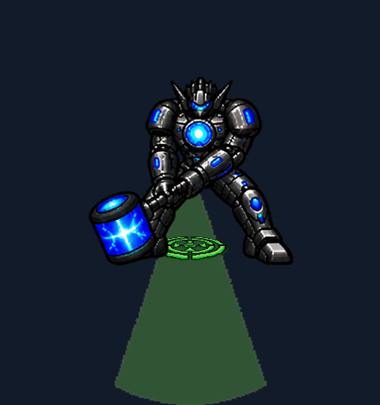
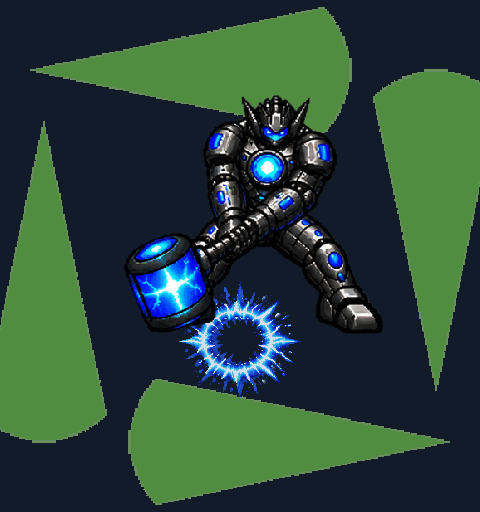
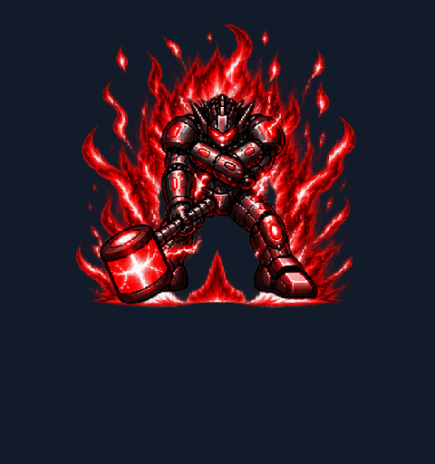
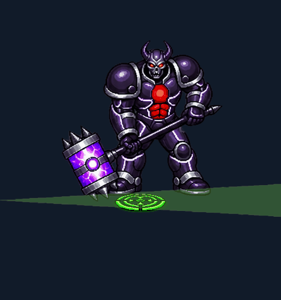
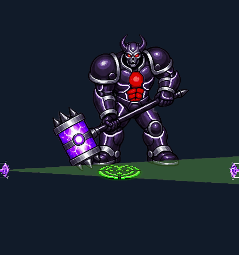
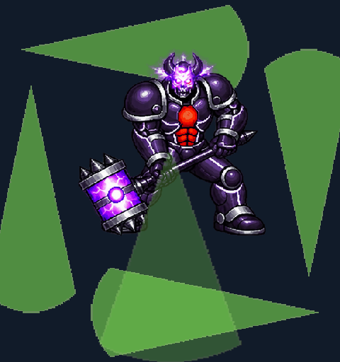
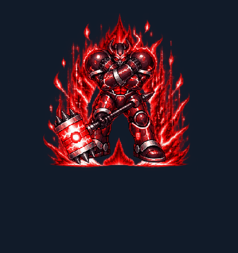

Normal

Normal: one slam. Hard: two. Furious: two slams, then left/right twisting sweeps. Actual native-renderer encounter captures.







Sources and generation prompts: _ART_SOURCES/hammer_furious_1022/prompts.md. These are isolated encounter reviews, not campaign playthroughs.